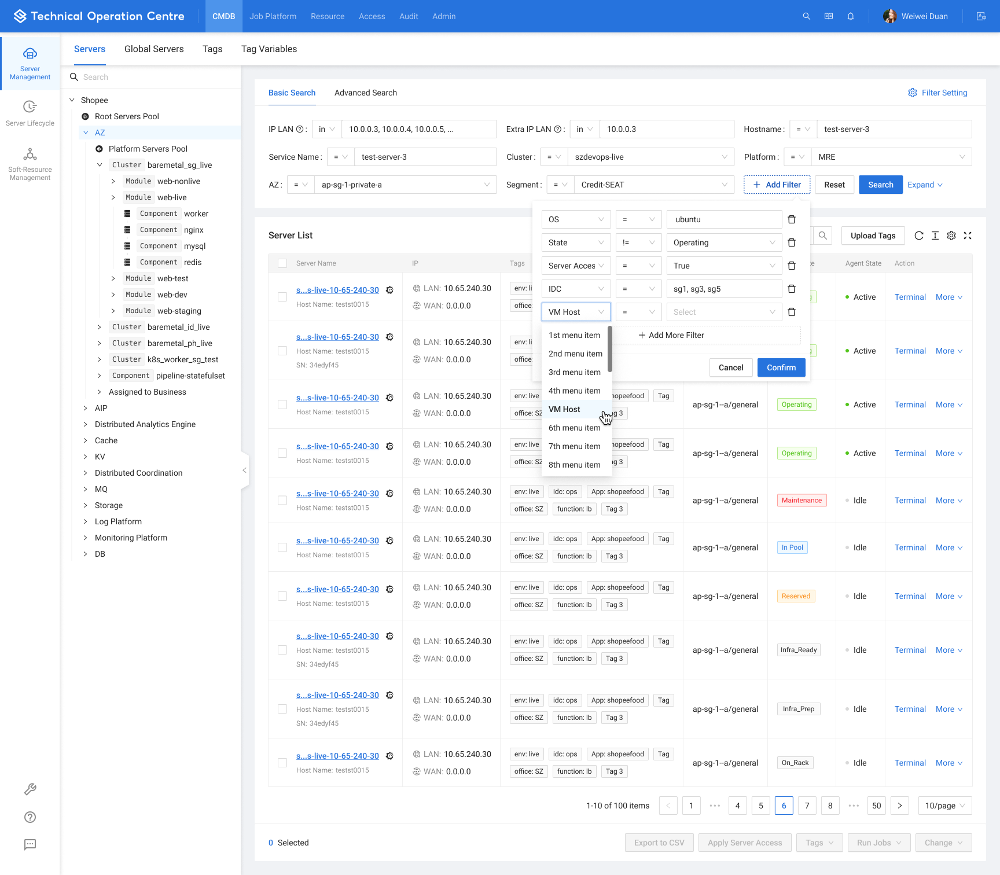

01 / 产品与判断
顺着工作理解那些技术名词
在基础设施产品中，理解术语只是开始。同名资源可能属于不同环境，一条规则可能关联多组对象，界面上很小的一次操作也可能有很大的影响范围。知道字段叫什么，还不够决定它应该放在哪里。
和技术用户讨论时，我会沿着具体任务继续问：为什么先看这个字段，接下来去哪里核实，什么情况会改变操作。这样的追问能把一个笼统的“不好用”，展开成可以处理的问题。有时缺的是信息，有时是信息之间的关系，还有时是用户切换页面之后，不得不重新确认上下文。
专业用户已经熟悉很多概念，界面需要保留他们作判断所需的精度。把字段藏起来，眼前看着简单了，使用者却可能需要反复展开、来回核对。设计时要算上这部分成本。
02 / 产品与判断
筛选出什么和选中了什么
TOC 的资源查询里，对象树、环境选择和页面筛选会共同影响结果。每个控件单独看都不难理解，组合起来之后，用户还需要知道当前究竟在什么范围内查找，切换节点后刚才的条件是否继续生效。
TOC v1.1 · 查询与资源上下文完整原稿

批量操作会让这个问题更明显。筛选出一组结果、勾选当前页、选中全部查询结果，是三种不同状态。如果界面没有持续说明范围，用户就得靠记忆判断自己将要操作哪些资源。最后的确认弹窗可以再核对一次，前面的列表和选择反馈也应帮助他看清变化。
同样的考虑也适用于安全规则表。来源、目的地、服务和动作往往需要关联阅读，字段分组、固定列与详情展开都要照顾这种顺序。必要的信息密度能减少反复查找，不能仅凭页面是否清爽来评价。
真实产品原稿 · 表格与导航中的上下文
两张真实原稿分别呈现高密度字段的关联阅读，以及产品入口、对象树和任务视图之间的分工。
03 / 产品与判断
留下方案也留下选择的理由
这些工作最后会落成表格、筛选器和导航，但我希望协作者还能读到选择背后的原因：哪些信息需要一起看，为什么拆开配置与结果，跳转后哪些条件必须保留。
组件指南可以统一列宽、间距和交互状态。场景变了，原来的布局未必仍然合适。说明当时用户需要确认什么、哪些限制影响了方案，下一位设计师才能决定怎样沿用，而不只是照着已有页面再画一遍。
DataGo 的角色划分与 TOC 的操作范围，表面上是不同的问题，都要求我们多走一步：从已有功能回到人的工作，再决定怎样组织界面。对专业工具来说，这一步往往比把页面整理得更整齐更费时间。